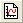

Weitere relevante Videos: Diagrammvorlage
Weitere relevante Videos: Diagrammvorlage
 Weitere relevante Videos: Diagrammvorlage
Weitere relevante Videos: Diagrammvorlage
Vorlagendateien von Origin können verwendet werden, um eine benutzerdefinierte Abfolge von Datenverarbeitungs- und -formatierungsoptionen zu speichern. Vorlagen können aus den Origin-Fenstern Arbeitsmappe, Grafik oder Matrix heraus gespeichert werden. Beachten Sie, dass Daten nicht mit einer Vorlage gespeichert werden.
Eine Reihe von Unicode-kompatiblen (UTF-8) Dateitypen wurde zu Origin 2018 hinzugefügt. Anwender eines Upgrade werden erkennen, dass einige der alten Dateitypen nun ein Gegenstück in Unicode haben, erkennbar an dem angehängten 'u' (z. B. *.opj => *.opju). Die Origin-Versionen 2018 und höher lesen und schreiben die älteren Nicht-Unicode-Dateitypen auch. Da die Standardeinstellung das Speichern in den neueren Unicode-Dateitypen ist, stellen Sie sicher, dass Sie die entsprechende Option in der Auswahlliste Dateityp wählen, wenn Sie in die älteren Dateitypen speichern möchten. |
Origin wird mit einer Reihe von vordefinierten Systemvorlagen und erweiterten Vorlagen ausgeliefert. Während der Installation werden diese Systemvorlagen im Origin-Programmordner und die Erweiterten Vorlagen im Ordner AppData/Local/OriginLab/Template des aktuellen Windows-Systemordners installiert. Sie können die mit Origin ausgelieferten Arbeitsmappen-, Diagramm- und Matrixvorlagen verwenden und nach Bedarf benutzerdefiniert anpassen, aber Sie können die Vorlagen in Ihrem Programmordner nicht überschreiben.
| Hinweis: Es gibt drei Systemvorlagen, die speziell sind: ORIGIN.OTWU (Arbeitsmappe), ORIGIN.OTPU (Diagramm) und ORIGIN.OTMU (Matrixmappe). Hier handelt es sich um die Vorlagen, die aufgerufen werden, wenn Sie auf die Schaltflächen Neue Arbeitsmappe , Neue Grafik  oder Neue Matrix der Symbolleiste Standard klicken. |
Sie können den Dialog template_saveas öffnen, um ein benutzerdefiniertes Fenster als Vorlage zu speichern.
Um den Dialog zu öffnen und eine Vorlage für Diagramm/Arbeitsmappe/Matrixmappe zu speichern:
oder
| Category | Wählen Sie einen benutzerdefinierten Kategorienamen oder geben Sie diesen zur Verwendung in der Vorlagenbibliothek ein. Die Standardeinstellung ist Benutzerdefiniert. |
|---|---|
| Vorlagenname | Legen Sie den Vorlagennamen fest. Der Standard ist der Name der Vorlage, die zum Erstellen des Fensters verwendet wurde. Sie können unter dem gleichen Namen speichern oder einen neuen Namen eingeben. Siehe diesen Abschnitt zur weiteren Anleitung. |
| Dateityp | Origin 2018 führte neue Unicode kompatible Dateitypen für die verschiedenen Projekt-, Fenster- und Vorlagendateien ein. Diese Dateitypen enden mit "U" (z. B. *.OTPU). Unicode-Dateien können nur in Origin 2018 oder später gelesen werden. Sollten Sie also Rückwärtskompatibilität benötigen, verwenden Sie die Auswahlliste Dateityp, um im älteren OTP-Dateityp zu speichern (siehe jedoch den Hinweis). Hinweis: Das Speichern im älteren Format (OTP) erzeugt nicht automatisch ein Vorschaubild wie das Speichern als OTPU (Vorschaubilder werden in der Vorlagenbibliothek und im Menü Zeichnen verwendet). Wenn Sie ein OTP speichern müssen, empfehlen wir folgende Vorgehensweise:
Auf diese Weise können Sie ein Vorschaubild der OTP-Vorlage im Menü Zeichnen und in der Vorlagenbibliothek anzeigen. |
| Vorlagenbeschreibung | Fügen Sie eine Beschreibung hinzu, die bei der Identifikation der Vorlage hilft. |
| Diagrammkurzname vordefinieren | Diese Option ist nur für Diagrammfenster verfügbar. Sie können den Kurznamen für das Diagramm, das auf Grundlage dieser Vorlage erstellt wurde, vordefinieren. |
| Diagrammlangname vordefinieren | Diese Option ist nur für Diagrammfenster verfügbar. Sie können den Langnamen für das Diagramm, das auf Grundlage dieser Vorlage erstellt wurde, vordefinieren. |
| Als klonbare Vorlage markieren | Diese Option ist nur für Diagrammfenster verfügbar. Wenn Sie beim Zeichnen eines neuen Diagramms mit einer solchen Vorlage aktiviert ist, ignoriert Origin die Datenauswahl im Arbeitsblatt und prüft, ob die neuen Daten mit den ursprünglichen Daten gemäß der Bedingung unten Nach Übereinstimmung klonen entsprechen. Bei Übereinstimmung wird das Diagramm allein durch Klonen des Diagramms mit neuen Daten erstellt. Die klonbare Vorlage kann schnell durch Auswählen des Menübefehls Zeichnen: Anwendervorlagen aufgerufen werden. Ist diese Option nicht aktiviert, wird es eine reguläre Diagrammvorlage. Das Diagramm wird auf Grundlage der Datenauswahl erstellt. Weiteres zum Zeichnen durch Klonen erfahren Sie unter Stapelzeichnen. |
| Spalte stimmt überein mit | Diese Option nur verfügbar, wenn Als klonbare Vorlage markieren aktiviert ist. Sie bestimmt, wie neue Datenspalten bei Verwendung Ihrer klonbaren Vorlage identifiziert werden. Spalten werden identifiziert durch:
Hinweise:
|
| Modifizierer stimmen überein mit | Einige Zeichnungsattribute können modifiziert werden, indem Sie auf eine Spalte von Werten abgebildet werden. Die abgebildete Spalte kann über ihre relative Spaltenindexnummer identifiziert werden (Versatz) oder über Kurzname, Langname, Einheiten, Kommentare der Spalte, (Standard-) Parameter(n) oder den Benutzerdefinierten Parameter. Wenn ein Diagramm mit neuen Blättern oder Mappen dupliziert wird, wird die Auswahl der Modifiziererspalte durch diese Einstellung gesteuert und nicht durch die Einstellung von Zeichnungsspalten stimmen überein mit im Dialog Arbeitsbatt auswählen. Das Bedienelement Modifizierer stimmen überein mit befindet sich auf der Registerkarte Allgemeines des Dialogs Details Zeichnung. |
| Dateipfad | Legen Sie den Vorlagendateipfad fest. Der Standardpfad ist der Anwenderdateiordner (UFF). Wenn das aktuelle Projekt vorgespeichert ist, können Sie <Projektordner> oder <Projektordner><PE-Pfad> wählen, um diese Vorlage im Projektpfad oder im Unterordner des Projektpfads zu speichern, der die gleiche Ordnerstruktur hat wie der Projekt Explorer. |
| Vorschaubild (optional) |
Wenn Sie eine Diagramm- oder Arbeitsmappenvorlage speichern, wird automatisch ein Vorschaubild des Fensters erzeugt. Diagrammvorschauen werden im Menü Zeichnen (Kategorie Vorlagen) und in der Vorlagenbibliothek verwendet. Arbeitsmappenvorschauen werden im Dialog Neue Arbeitsmappe verwendet. Die meisten Anwender übernehmen das Standardbild, aber Sie können dieses Feld verwenden -- entweder beim Speichern einer neuen Vorlage oder beim Bearbeiten einer existierenden Vorlage --, um ein alternatives Bild hinzuzufügen. Jede Bildgröße sollte funktionieren (Origin passt die Größe des Bildes an), aber die besten Ergebnisse werden erreicht, wenn das Bild möglichst nah an der finalen Anzeigegröße erstellt wird (ca. 160 Pixel Breite X 130 Pixel Höhe). |
| Aufhebung durch Systemdesign zulassen | Dieses Kontrollkästchen ist verfügbar, wenn eine Diagrammvorlage gespeichert wird. Legen Sie fest, ob es einem Systemdesign beim Laden gestattet sein soll, die Vorlageneinstellungen aufzuheben. |
Beachten Sie, dass das Dialogbild, das oben gezeigt wird, für eine Diagrammvorlage gilt, aber dass dieses gleiche Prinzip auf andere Fenstertypen angewendet wird: Wenn Sie die Vorlage modifizieren, die mit dem Menübefehl bzw. der Symbolleistenschaltfläche eines neuen Diagramms, einer neuen Arbeitsmappe oder Matrix verbunden ist, speichern Sie die modifizierte Vorlage mittels des Standardnamens in Ihrem Anwenderdateiordner (UFF). Die Vorlage in Ihrem Anwenderdateiordner wird jetzt verwendet, um neue Fenster zu erstellen, wenn Sie den Menübefehl oder die Symbolleistenschaltfläche verwenden. |
Auf der Symbolleiste Standard befinden sich die Schaltflächen für Neue Arbeitsmappe und Neue Matrix . Es gibt eine Methode, um eine benutzerdefinierte Vorlage mit diesen Symbolleistenschaltflächen zu verbinden, auch wenn Ihre benutzerdefinierte Vorlage nicht den gleichen Namen hat wie die Standardvorlage (Origin.otwu, Origin.otmu).
Wenn Sie eine andere als Standard festlegen möchten, können Sie die neue Mappe auswählen und sie als Standard festlegen. Um die Systemstandardmappe wiederherzustellen, klicken Sie einfach mit der rechten Maustaste auf die aktuelle Mappe und wählen Standard löschen.